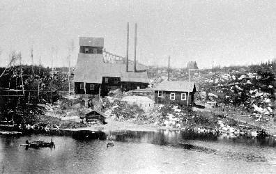

Photo Gallery
Mining in Algoma
|
One of the numerous mining sites operated by the various Clergue industries at Michipicoten. Photograph: Sault Ste. Marie Museum. |
The Helen Iron Ore Mine prior to the draining of Boyer Lake. Photograph: Sault Ste. Marie Public Library. |
Men and Machinery removing iron ore from the Helen Mine site at Michipicoten. |
|
The tramline that was used to transport iron ore from what was once the bottom of Boyer Lake to the surface at the Helen Mine in Michipicoten. |
An Algoma Central Railway train leaving the dock at Michipicoten Harbour after loading a ship with iron ore. Photograph: Sault Ste. Marie Public Library. |
The elaborate wharfage and docking structure constructed at Michipicoten Harbour to load ships with iron ore. Photograph: Sault Ste. Marie Public Library. |
|
The hills surrounding Michipicoten Yownship were rich with minerals including iron ore and gold. This abundance spawned numerous mine sites. |
A construction crew laying a portion of track along the Algoma Central Railway route. |
A typical mining camp at Michipicoten. |
Miners removing iron ore from a mine site using shovels and wheelbarrows. |
Grace Gold Mine office building. |
 Helen Iron Ore Mine on the shore of Boyer Lake. Photograph: Sault Ste. Marie Museum. |